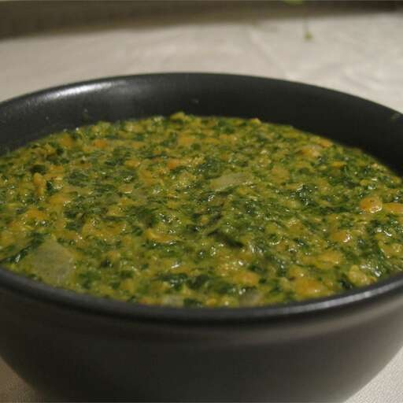

Fish Tacos
Home

These crispy fish tacos with shredded cabbage and a spicy homemade white sauce are just delicious! Serve with homemade pico de gallo and lime wedges to squeeze on top.
You don’t have to leave your house to enjoy perfect fish tacos! This beer-battered fish taco recipe, topped with a homemade white sauce and fresh cabbage, will quickly become a mainstay in your rotation.
Ingredients
Beer Batter
- 1 cup all-purpose flour
- 2 tablespoons cornstarch
- 1 teaspoon baking powder
- ½ teaspoon salt
- 1 cup beer
- 1 egg
White Sauce
- ½ cup plain yogurt
- 3 ½ cups water
- ½ teaspoon salt
- ½ teaspoon ground turmeric
- ½ teaspoon chili powder
- 1 pound spinach, rinsed and chopped
- 2 tablespoons butter
- 1 onion, chopped
- 1 teaspoon ground cumin
- 1 teaspoon mustard seed
- 1 teaspoon garam masala
- ½ cup coconut milk
Fish Tacos
- 1 ½ cups red lentils
- 3 ½ cups water
- ½ teaspoon salt
- ½ teaspoon ground turmeric
- ½ teaspoon chili powder
- 1 pound spinach, rinsed and chopped
- 2 tablespoons butter
- 1 onion, chopped
- 1 teaspoon ground cumin
- 1 teaspoon mustard seed
- 1 teaspoon garam masala
- ½ cup coconut milk
Steps
- Rinse lentils and soak for 20 minutes.
- In a large saucepan, bring water to a boil and stir in salt, lentils, turmeric and chili powder. Cover and return to a boil, then reduce heat to low and simmer for 15 minutes. Stir in the spinach and cook 5 minutes, or until lentils are soft. Add more water if necessary.
- In a small saucepan over medium heat, melt butter and saute onions with cumin and mustard seeds, stirring often. Cook until onions are transparent, and then combine with lentils. Stir in garam masala and coconut milk and cook until heated through.